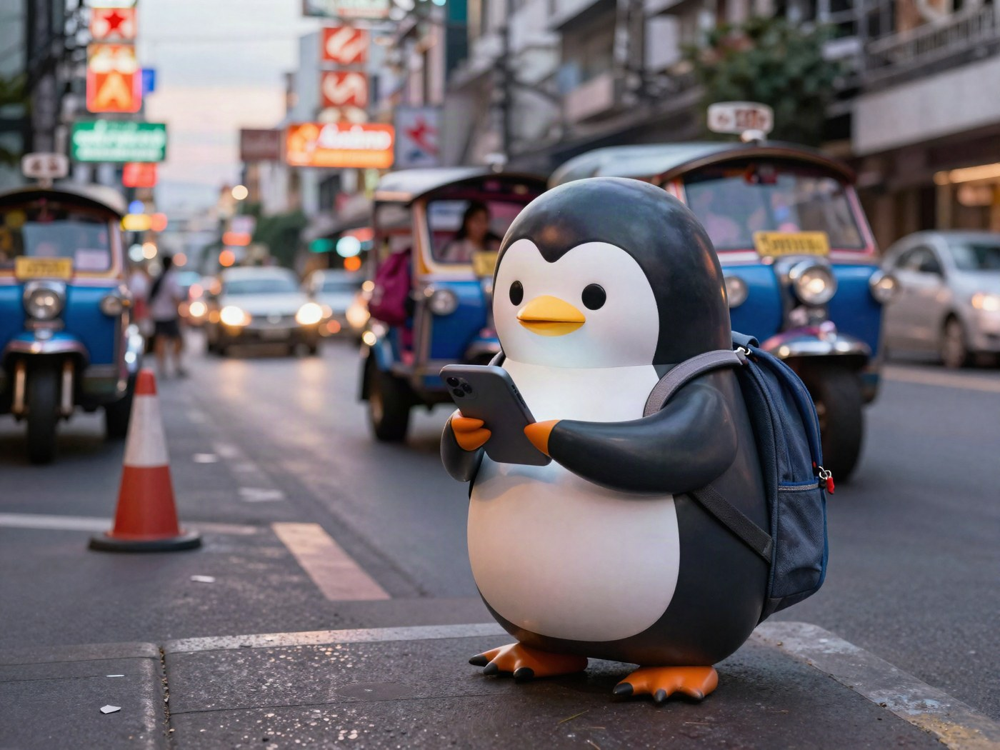
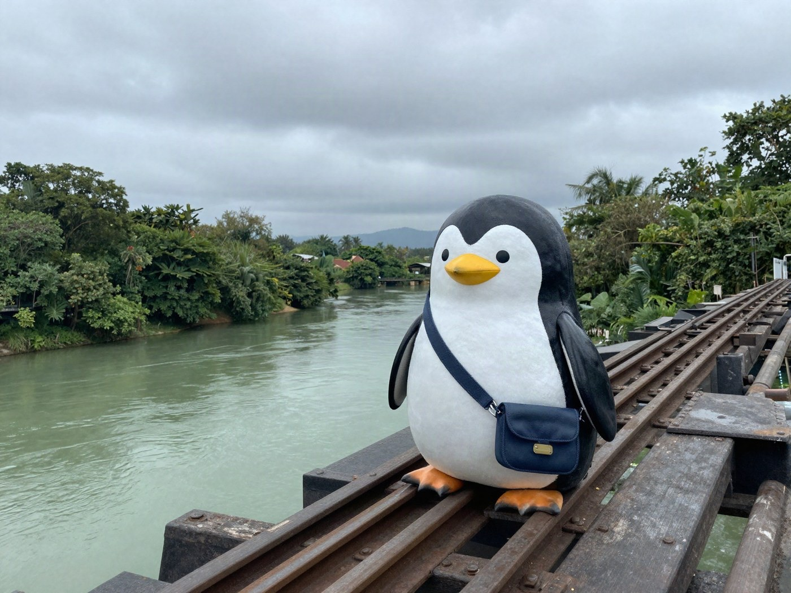

My first trip abroad: Thailand, alone, with one bag and no plan

My first time abroad was when I was 19. I went to Thailand alone, for about 6 nights and 7 days. I spent about 5 days in Bangkok and about 2 days in a place called Kanchanaburi.
about 5 days
about 2 days
All I took was one bag. I really made no plans at all.
I had only booked a hotel for the first night. I came without deciding anything about what to do.
On the plane there, I had made up my mind to travel alone.
But once I actually got to Thailand, I was very worried about how I would spend 7 whole days.
I came on a solo trip because I wanted to grow as a person, but I had no idea what to do, and I was stuck.
So after arriving in Thailand, I looked up lots of places to visit and traveled while asking ChatGPT for advice.
What I learned on this trip is that in Thailand, you can easily get a hotel even on the same day.
I never ended up in a disaster like “I have nowhere to sleep tonight.” That part was good.

One reason I went to Kanchanaburi was the history of World War II. The war history I learned in Japan felt centered on Japan's side.
So I became interested in this question: “What was Japan like then, when seen from overseas?”
So I visited places related to the railway called the Death Railway, and a museum with exhibits about World War II. When I saw the photos and exhibits from that time, I felt the history was much harsher than I had imagined.